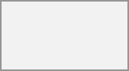

Please note that this is a special conversation with yourself. Messages here do not have a limit for editing or deletion. You can use it to:
Take notes: write down ideas, reminders, or important information you want to keep handy. Items on the blacklist cannot be selected.
Create to-do lists: use Markdown syntax to create checklists for tasks you need to complete.
Forward messages from other chat: use the message menu to forward important messages from other conversations to your Note to self.
